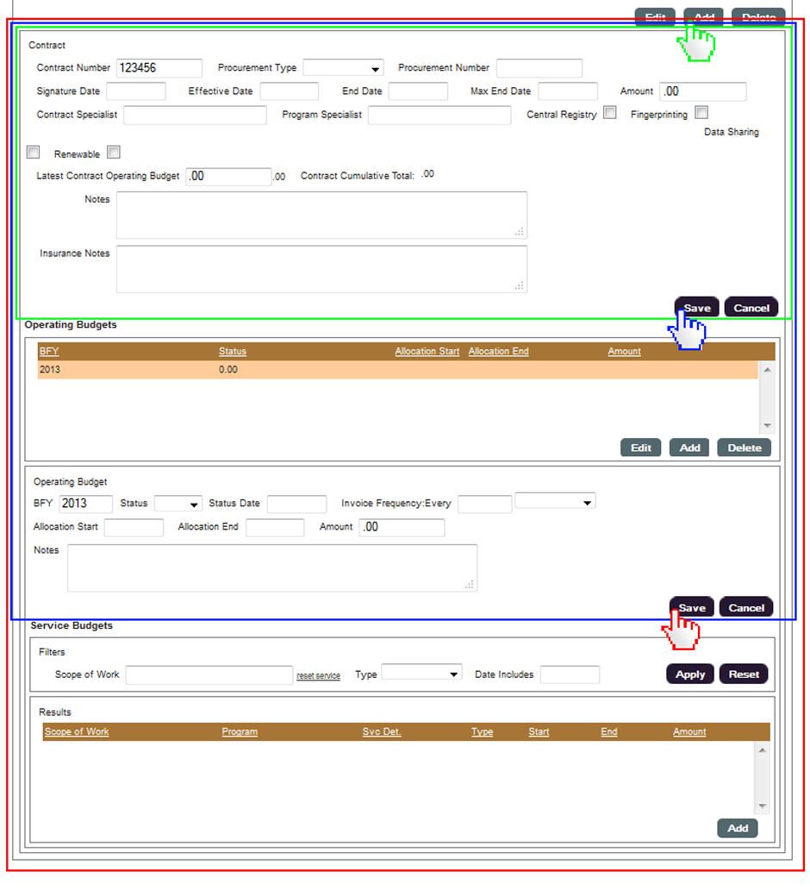

The Issue:
Users being trained in a new software system were having trouble understanding the hierarchy of their contract database. The hierarchy was Contract > Operating Budget > Service Budget. A single contract could contain many operating budgets and a single operating budget could contain many service budgets. Users were attempting to add orphan service budgets which did not correspond to an operating budget and were getting frustrated when this wouldn't work.
The Process:
From watching the newly trained users attempt to use this page, it was clear that the system's design was leading to confusion. The users did not seem to understand:
- that they needed a high-level container (a contract) to describe a relationship between their organization and one of their contractors.
- that within this relationship they could define many mid-level containers (operating budgets), one to describe each fiscal year.
- that only within those operating budgets could they create the low-level container (the service budget) which defined their receipt of a specific service during a specific budget period from a specific contractor.
The reason for this misunderstanding stood out like a sore thumb: Creating a new contract displayed a blank contract as well as a blank operating budget and service budget.
This was problematic for a couple of reasons:
- It was not possible for users to save information on an operating budget before the contract was created and it was not possible to save information on a service budget before the operating budget was created. The screen was giving users fields that they could use but not save, and it was causing frustration and confusion when users found themselves with orphaned operating budgets or service budgets.
- The display implied a one-one relationship between each of the three items, when it is actually two one-many relationships. The display of all parts at once made it difficult for users to understand that each of the two sub-categories was a list contained by the corresponding super-category. This was complicating the training process and leading to conerns about data integrity (if users don't understand how the data is structured, they can't make good decisions when working with it).
The Solution:
I created the screenshot and spec below to show how this should change.
The visual display of each sub-level now opens from within the containing level, making the contract hierarchy more readily apparent. It is now necessary to create (or open) an entity's container before it is possible to create (or open) the entity. Users are no longer adding data that they cannot save, because the system no longer provides fields that cannot yet be saved.
Screenshot:

Spec:
When adding a new contract, it should open with no operating budget section. Saving the new contract should keep the contract open.
Saving the new contract should also reset and reapply the filters (so that the new contract shows up in the list of contracts, highlighted). At this point, the Operating Budget section will be open to add contracts.
The same functionality should apply to operating budgets:
- A new operating budget should open with no service budgets section.
- Saving the new operating budget should keep the operating budget open.
- Saving the new operating budget should also reset and reapply the filters on the operating budget list so that the new operating budget is visible in the list and highlighted.
- At this point, the service budget section will be visible.
The same functionality should apply to service budgets:
- Saving a new service budget should reset and reapply the filters on the service budget list, so that the new service budget is visible and highlighted in the list. Saving the new service budget should also leave it open.